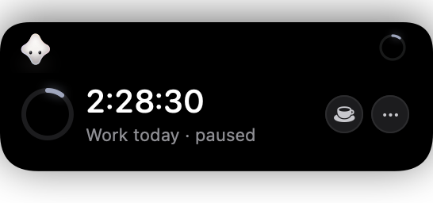
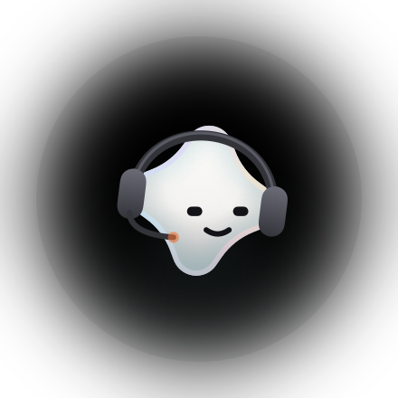

Counts your work and your breaks
It notices when you're working and when you're taking a break, with no timer to start. After an hour and a half of focus it suggests a pause, and after a full day it tells you to stop.
Nova keeps time on your focus and your breaks, greets you when you sit down, and taps you on the shoulder when a meeting is coming or an AI agent needs you.
Download for MacFree. For MacBooks with a notch, macOS 14 or later.
You don't start or stop anything. Nova sits beside the notch, keeps an eye on your day, and speaks up only when something matters.
It notices when you're working and when you're taking a break, with no timer to start. After an hour and a half of focus it suggests a pause, and after a full day it tells you to stop.
In the morning it says hello and lists your meetings and reminders. In the evening it sums up your day and shows what's first tomorrow.
It reads your Calendar and nudges you an hour before a meeting and again fifteen minutes before, with a Join button for video calls. Your reminders show up when they're due.
If you use Claude Code, Codex, Cursor or the Claude app, Nova tells you when they finish or need you, and lets you answer right from the notch.
The star breathes, blinks and follows your cursor. It wears 3D glasses when you watch something and a headset when you play.
It opens only as wide as it needs to and slides aside when you reach for a menu. Everything it sees stays on your Mac.
A few of the moments you'll see in your notch. Each one opens for a few seconds, then closes again.




Nova breathes, follows your cursor and hops when you come back. Put on a video and it reaches for its 3D glasses. Start a game and the headset comes out.

Curious

Glad you're back

Watching something

Playing
Nova is signed and checked by Apple, so it opens like any other app.
Nova looks at which app is in front and your calendar only to understand your day. It doesn't send any of it anywhere, and it has no account to sign in to.
You choose what it connects to, and you can switch each one off in Settings.
Yes. Download it and use everything.
MacBook Air and MacBook Pro models with a notch (from late 2021 onwards), running macOS 14 Sonoma or later.
Barely. The first time you open Nova, a short setup asks your name and which apps you'd like it to connect to. You can skip anything and change it later.
Accessibility lets Nova tell YouTube from your work in the browser and notice when Claude replies. Calendar and Reminders let it remind you about meetings and to-dos. Each one is optional, and Nova works without them.
No. Nova is a focus, break and calendar companion for anyone. The AI features simply switch on if you use Claude Code, Codex, Cursor or the Claude app.
Right-click the notch. You'll find Settings and Quit there.
Right-click the notch and choose Quit, then drag Nova from your Applications folder to the Bin.
Version 0.3.0